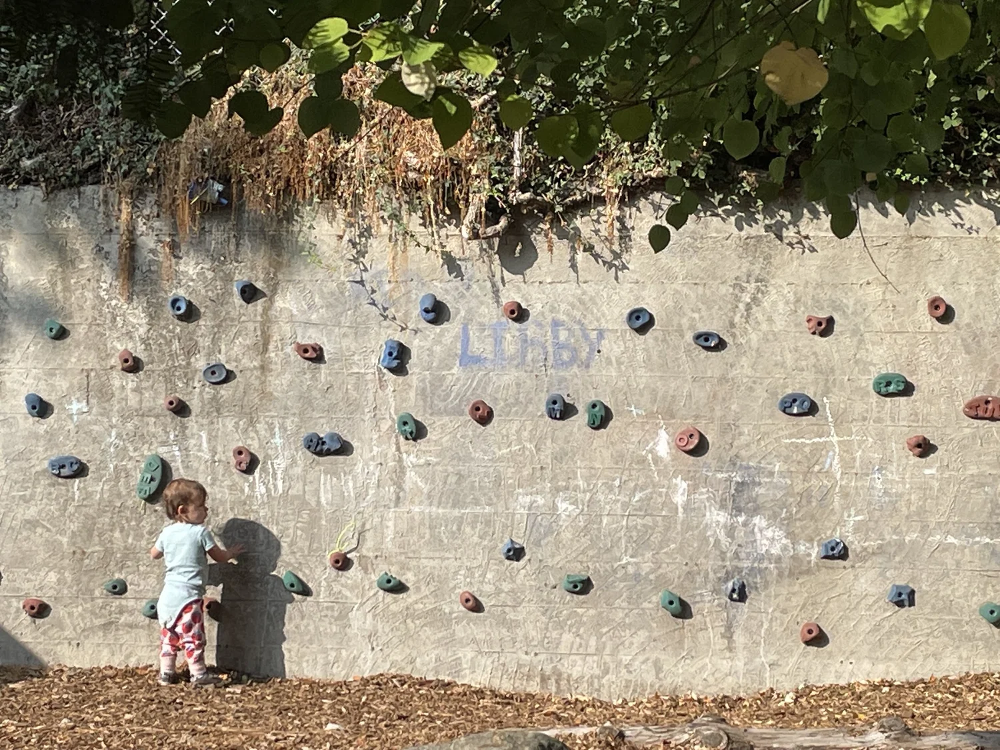

Home / Curriculum
Our Approach
Curriculum that grows from curiosity
At Wallingford Child Care Center, emergent curriculum means learning grows from children's interests at every age. Whether it's an infant exploring textures, a toddler testing independence, or a preschooler investigating the natural world, our educators listen, observe, and design experiences that honor each child's curiosity and capability.
From birth
Infants as capable learners
We honor infants as capable learners from birth, creating secure relationships and environments that nurture exploration. Even the youngest children show us what they're curious about through movement, gaze, and sound.
Educators observe closely and respond by shaping experiences around those cues, providing materials for sensory play.


Testing the world
Toddlers building confidence
Toddlers thrive on testing boundaries and asserting independence. Emergent curriculum channels this energy into meaningful exploration. WCCC educators follow toddlers' lead, offering challenges that build confidence, problem-solving, and collaboration.
By following the child's interest, we provide opportunities to explore numbers, science, social, and language growth.
Natural investigators
Preschoolers as community contributors
Preschoolers are natural investigators. Emergent curriculum builds on their questions and ideas, connecting them to broader concepts.
We empower preschoolers to think critically, work together, and see themselves as contributors to their community.
Small by design
Student-to-teacher ratios
Low ratios let our teachers truly know each child. WCCC is licensed for 58 children, ages 8 weeks to 5 years.
| Classroom | Stage | Ratio |
|---|---|---|
| Cloud | Infants | 1 : 3 |
| Sunshine | Toddlers | 1 : 4 |
| Rainbow | Young Preschool | 1 : 5 |
| Star | Preschool | 1 : 7 |
| Rocket | Pre-Kindergarten | 1 : 9 |
Staying connected
Family communication
We communicate with families through the ProCare app, a parent messaging system, with frequent pictures and updates.
- ProCare app — real-time photos, updates, and messaging throughout the day.
- Monthly newsletter — center-wide news, plus classroom-specific updates.
- Conferences twice a year — to stay connected about your child's development.
“Our image of the child is rich in potential, strong, powerful, competent and, most of all, connected to adults and other children.”
— Loris MalaguzziSee our curriculum in action
The best way to understand emergent curriculum is to watch it unfold. Book a group tour and visit the classrooms.